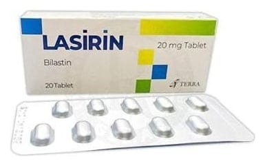

Lasirin 20 mg Tablet, 20 ADET

Ne için kullanılır
KT · Bölüm 1LASİRİN, antihistaminik bir etkin madde olan bilastin içerir ve beyaz, oval, bikonveks ve çentikli tablet şeklindedir. 20 tabletlik blister ambalajlarda tedarik edilmektedir. LASİRİN, saman nezlesi (hapşırma, kaşıntı, burun akıntısı ve tıkanıklığı ile gözlerde kızarma ve sulanma) ve alerjik rinitin diğer formlarının tedavisinde kullanılır. Ayrıca kaşıntılı deri döküntülerinin (kurdeşen veya ürtiker) tedavisinde de kullanılabilir.